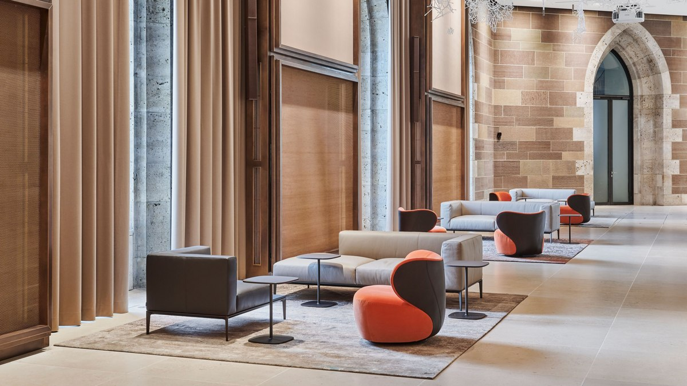

Campus of Competence
A place to learn.
Explore the official program for professionals and designers.
Ideas, materials and resources for your next project. Find support for architecture and interior design.

Project and material study guides.
Explore furniture in architectural spaces.
Learn about planning and design.
Experience the collection in person.
Official press information and resources.
Find the right contact for your project.
Explore professional planning tools.
Find official design resources.
Page structure, local setup and team responsibilities · TXT
Leather palette and material reference links · TXT
Links to official care and material information · TXT
These are study documents. For official CAD data, brochures and product specifications, visit Official downloads .
Campus of Competence
Explore the official program for professionals and designers.
Planning tools
Find official resources for specification and space planning.